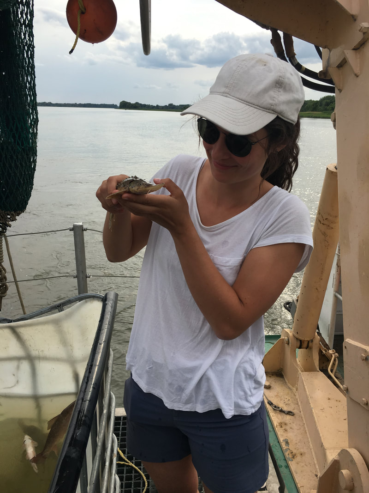

<div class="content-wrap">
  <div id="wsite-content">

    <div class="wsite-section-wrap">
      <div class="wsite-section wsite-body-section" style="background-color:#ffffff;">
        <div class="wsite-section-content">
          <div class="container">
            <div class="wsite-section-elements">

              <div class="wsite-multicol">
                <div class="wsite-multicol-table-wrap">
                  <table class="wsite-multicol-table">
                    <tbody>
                      <tr>
                        <!-- Left: research photo -->
                        <td class="wsite-multicol-col" style="width:50%;padding:0 15px;">
                          <div class="wsite-image" style="padding-top:10px;padding-bottom:10px;text-align:center;">
                            
                          </div>
                        </td>

                        <!-- Right: research text
                             To update research descriptions, edit the paragraphs below. -->
                        <td class="wsite-multicol-col" style="width:50%;padding:0 15px;">
                          <div class="paragraph" style="text-align:justify;">
                            <strong>PhD. Research</strong><br>
                            I focus on answering two general questions: how do human disturbances change <strong>mean</strong> trait values and how do they change <strong>phenotypic variation</strong> (e.g., the variance within populations)? To explore these topics, I first extended and then used a large database for synthetic analyses of how human disturbances affect changes in phenotypic trait means (<em>Molecular Ecology</em> in 2022) and variances (<em>Ecology Letters</em> in 2023). These meta-analyses highlight how different types of disturbances can have different effects on the two ways of looking at traits. This work especially emphasized how a lack of significant average effects in statistical models shouldn't be interpreted as a lack of change, but rather as a great variety of changes that differ among traits, populations, contexts, and time periods. To better understand these changes, I also conducted three case studies investigating the effects of different types of human disturbances on a model organism, threespine stickleback (<em>Gasterosteus aculeatus</em>) in an exemplary study area, Haida Gwaii, BC. For each case study, I leverage historical collections and new samples to make temporal comparisons of pre- and post-human disturbance. Early results suggest that unarmoured stickleback populations listed as Special Concern under SARA have drastically changed their armour phenotype in response to a major drought event.&nbsp;
                          </div>

                          <div style="height:20px;overflow:hidden;width:100%;"></div>
                          <hr class="styled-hr" style="width:100%;">
                          <div style="height:20px;overflow:hidden;width:100%;"></div>

                          <div class="paragraph" style="text-align:justify;">
                            <strong>MSc. Research</strong><br>
                            Environmental gradients, such as oxygen, temperature, or ions, have larger effects on some species than on others, raising questions as to how some species are able to persist across gradients when other species are not. We addressed this topic by considering how a critical fitness traits (scales and skeleton) are influenced by a large environmental gradient in a key component of those traits (calcium). We found that all three studied native fish species were able to maintain their phenotypes across a massive gradient in calcium availability. This result suggests the presence of adaptive mechanisms enabling native fishes in low calcium conditions to better uptake, mobilize, and deposit calcium.
                          </div>
                        </td>
                      </tr>
                    </tbody>
                  </table>
                </div>
              </div>

            </div>
          </div>
        </div>
      </div>
    </div>

  </div>
</div>
